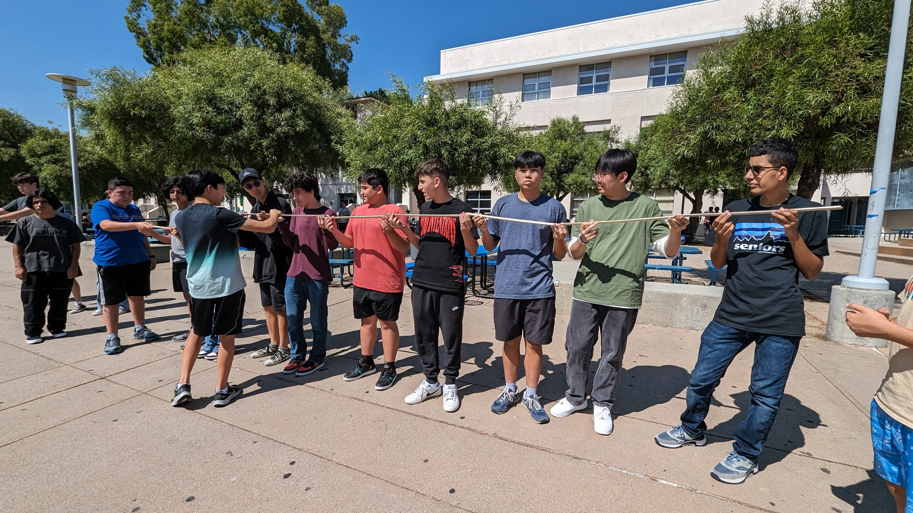
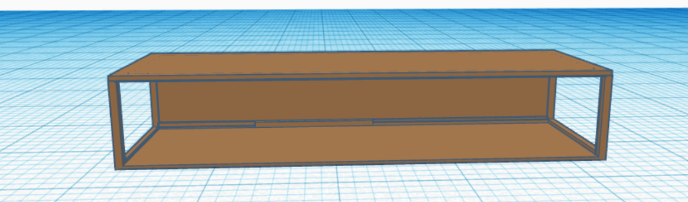
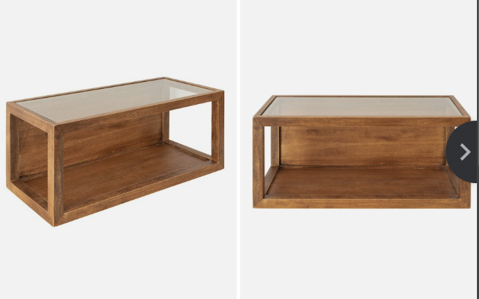
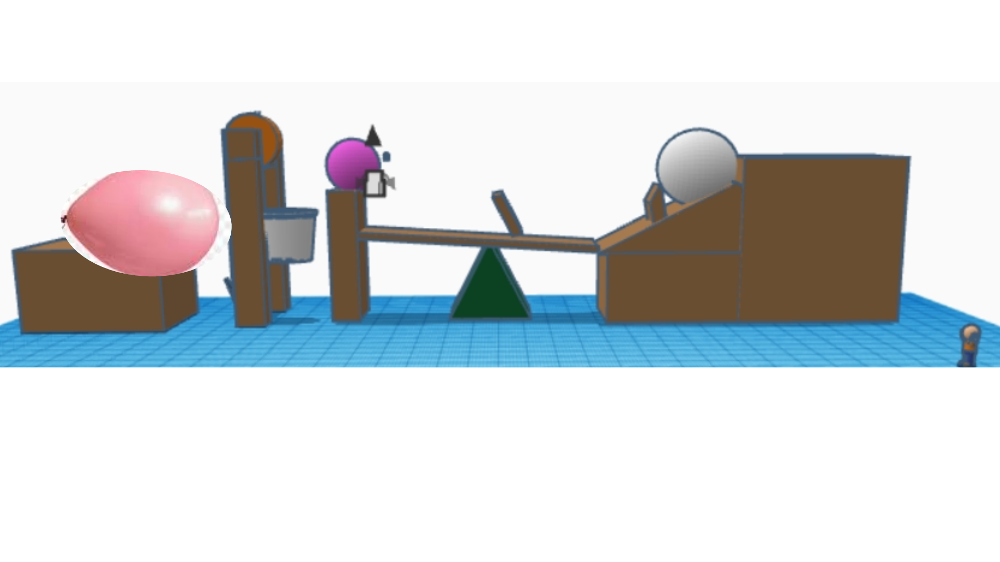
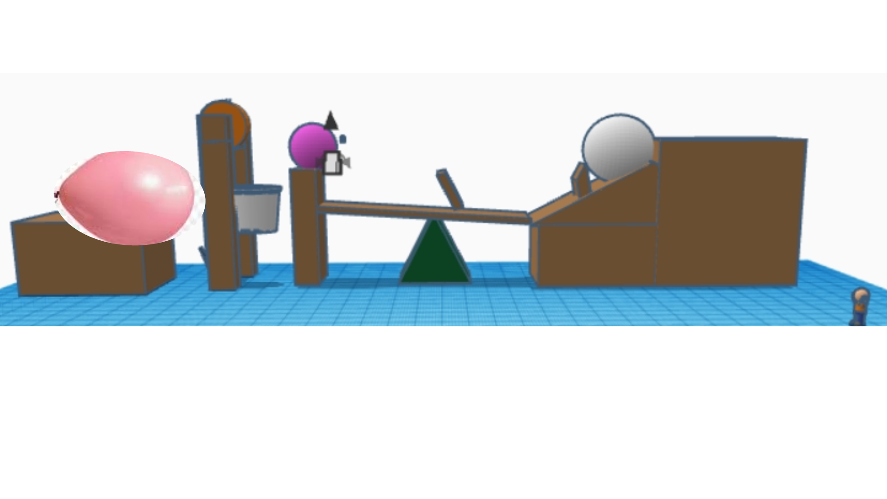

9/1/23 - This is my first journal entry!
1. Write what engineering discipline you learned about this week!
I Learned that we need to always wear your Safety Glasses when working with thigns that could break and fly.
2. What challenge/project did you do? What have you started designing and how?
We did a marble challenge where we had to make a marble travle down a line of pvc pipes but had to give the next person the pipe because we didnt have enough for everybody. We started working on a project where we have to start with a baseball and eventually get it to pop a balloon with a pin, we have to use pulleys ramps, levers, and etc.
3. Write about your Challenge this week!
We had a challenge were we had to use a website tinkercad we had to build a home appliance and who ever made the best looking object won.



9/8/2023 - This is my second journal entry
1. Write about how your week went
My week went good and pretty smooth and it was a pretty fun week because of Engineering.
2. Write about what you learned this week
I learned how to use a website called tinkercad to create stuff with it and make diagrams of projects that we will do.
.png) 

3. Write what your rube goldberg machine will do and what machines you're using
Our GoldBerg machine consists of a pully, incline plane, and a lever to get a baseball to eventually pop a balloon with a needle.
4. Write what you think will be the most challenging part
I believe that the most defficult part of this challenge will be getting the needle to go fast enough and the right speed to pop the ballon at the end.